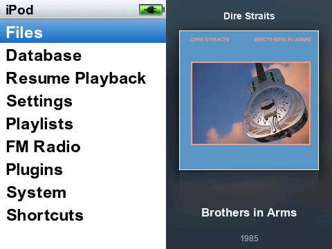
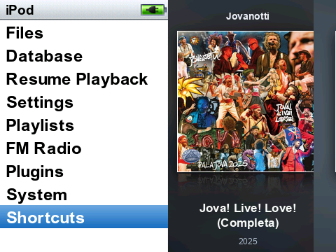
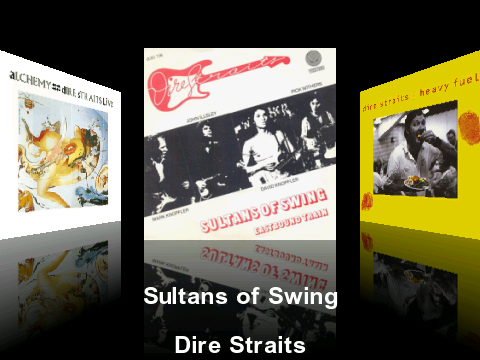

01 · THE MENU
iClassic Galleria
The original iClassic navigation stays on the left. Your album covers take over the right, changing about every ten seconds with a prepared crossfade and a subtle horizontal drift.
This is the downloadable themeI started with the iClassic theme, added an animated gallery to the main menu, and brought album browsing back with Rockbox PictureFlow. Here is how to make yours look and feel the same.


01 / WHAT WE BUILT
They work together, but they are different parts of Rockbox. That distinction makes the setup much easier to understand.
The original iClassic navigation stays on the left. Your album covers take over the right, changing about every ten seconds with a prepared crossfade and a subtle horizontal drift.
This is the downloadable theme
Turn the wheel to browse a 3D carousel of albums, then open one to see its tracks. PictureFlow is a Rockbox plugin; it reads the music database and has its own artwork cache.
Already part of RockboxThe theme does not install PictureFlow. It gives iClassic the animated menu gallery. The Cover Flow-style browser comes from the separate PictureFlow plugin included with the Rockbox build used here.
02 / MAKE IT YOURS
Follow these steps in order. Tick them off as you go; this browser remembers your progress.
Use a 360p Rockbox build for the Innioasis Y1. This gallery was made for the Y1’s 480 × 360 screen, so a 240p build or another player’s theme layout will not match.
Already running Rockbox? You can move on. Otherwise, follow the Y1 Updater guide and choose the Y1 and a compatible 360p release. Charge the player first.
Get iClassic v1.4 for 360p . The base theme supplies the now-playing screen, fonts, icons, backdrop and battery art. Our download is an add-on and expects those files to be present.
Back up the Y1’s .rockbox folder. Extract the base theme and copy the contents inside its .rockbox folder into the player’s existing .rockbox folder. Merge folders; do not replace the entire directory. On the Y1, apply iClassic once to check that it works.
iClassic_v1.4_360p folder. Some Y1 setups expose a USB volume; others use the Updater’s theme/file transfer. The destination must be the Rockbox .rockbox directory.Download the theme ZIP and extract it on your computer. Inside theme/.rockbox you will find the Galleria theme file, skin and six original demo covers. Copy the contents of that .rockbox folder into the Y1’s existing .rockbox folder, merging with iClassic.
Safely disconnect. On the player choose Settings → Theme Settings → Browse Themes → iClassic Galleria. The menu should show the sample artwork on its right half. Your iClassic now-playing screen should still look familiar.
.rockbox/themes/iClassic Galleria.cfg
.rockbox/wps/iClassic_Galleria.sbs
.rockbox/wps/iClassic_Galleria/soft/fade00.bmp …Give your music consistent Artist, Album, Title and Track tags, and keep cover art with each album (for example cover.jpg in that album’s folder). In Rockbox run Settings → General Settings → Database → Update Now and wait for indexing to finish.
Open Plugins → Demos → PictureFlow. Let it build its album-art cache the first time. Turn the wheel to browse; press the centre button to open an album. In our Y1 setup we also added a Cover Flow shortcut, but that shortcut is optional.
On your computer, put 2–43 JPG, PNG or WebP covers in a new folder called my-covers inside theme. Name them like Dire Straits - Brothers in Arms - 1985.jpg; the year is optional. These are your own local files and are never uploaded by the generator.
Install Python 3 and Pillow, then run the generator from inside the extracted theme folder. It builds new 16-frame fade strips and a matching skin. Copy the generated theme/.rockbox contents back to the Y1, merging them into its existing .rockbox folder, then reapply iClassic Galleria.
cd theme
python3 -m venv .venv
source .venv/bin/activate
python -m pip install -r requirements.txt
python tools/build_gallery.py --covers my-coversWhen your library grows, copy and tag the music, add its cover art, update Rockbox’s database, then update PictureFlow’s cache. To put that new cover into the menu gallery too, add its image to my-covers, rerun the generator and copy the fresh Galleria files to the Y1.
The menu order is shuffled when you build it; the display advances in ten-second slots. Run the generator with a different --seed to get a new order.
03 / THE EXTRA MILE
The gallery uses pre-rendered frames. On our Y1, stock menu refresh timing made them look jumpy, so we changed three timing constants in Rockbox’s librockbox.so. This is an optional system-level modification; the downloaded theme works without it, with a less fluid transition.
The supplied patcher accepts only the exact 32-bit ARM library tested here. It checks the original file’s SHA-256, checks all three instructions, changes exactly three bytes and verifies the output hash. It never ships a Rockbox binary or silently installs one.
Read the exact-build patch and restore procedure# Tested Y1 Rockbox build
230f848142-260516
# Original librockbox.so
f3820e6c7547df58…d13efbc1fdad9efd5c1ac
# What changed
menu wait 100 → 3 ticks
file browser 50 → 3 ticks
skin refresh 14 → 2 ticks
Do not apply this patch to a different build. You need ADB access, a root shell, and a recovery route. Back up the original first. Theme installation and PictureFlow never require this system patch.
04 / YOUR TURN
Download the complete Galleria add-on: ready-to-copy theme files, six original demo covers, the gallery generator, and the optional exact-build refresh tools. Start with iClassic v1.4 360p underneath.
Download iClassic Galleria05 / GOOD TO KNOW
This package targets the Innioasis Y1 with a 480 × 360 Rockbox build and its /sdcard/.rockbox paths. Another player needs its own screen layout, base iClassic files and tested file paths.
PictureFlow could not find suitable art for that database entry. Check the album tags and its folder artwork, then update the Rockbox database and rebuild PictureFlow’s cache. Untagged podcasts, audiobooks and video files can also appear as unwanted entries in a music database.
They can appear in the Rockbox database and PictureFlow after those caches are refreshed. The menu gallery is a set of generated bitmap transitions: to include a new cover there, add it to my-covers and run the generator again.
Choose the original iClassic theme in Rockbox to revert the appearance. If you applied the optional refresh patch, follow the guarded restore procedure in ADVANCED.md to restore your backed-up original library. Keep a backup of .rockbox before copying any theme files.